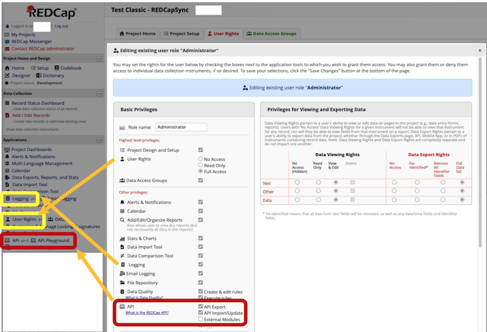

Several R packages exist for using the REDCap Application Program Interface (API) such as, redcapAPI, REDCapR, and tidyREDCap. However, REDCapSync is the first “get-everything” REDCap R package that converts REDCap projects into a standardized, API-efficient, and project-agnostic R6 object.
What is REDCapSync?
REDCapSync unleashes the full power of the REDCap API even for the basic R user. When a sync is performed, REDCapSync uses a cache of previous saves, a user-defined directory, and the REDCap log to only update data that changed since the last API call. Project objects can be used for the best that R has to offer via statistics, visualization, functions, shiny apps, and more!
The aims of REDCapSync are to…
- Encapsulate the REDCap API into one standardized object to streamline use.
- Automate common tasks such as cleaning, deidentification and merges.
- Automate distribution of user-defined Excel datasets to local/cloud storage for one or many REDCap projects.
- Convert labelled REDCap data from R or Excel for upload using REDCap API.
- Power the companion shiny app
RosyREDCap
By leveraging the combined strengths of R and REDCap, users can maintain strong data pipelines that include statistics, visuals, and even shiny applications!
Installation
The stable release version can be installed from CRAN.
install.packages("REDCapSync")Development Version
You can install the development version from GitHub with the pak. Windows users may need to install RTools version 4.5 to use pak.
# install.packages("pak")
pak::pak("thecodingdocs/REDCapSync")Alternatively, you can install the development version from GitHub with the remotes package.
# install.packages("remotes")
remotes::install_github("thecodingdocs/REDCapSync")If you have any issues, try downloading the most recent version of R at RStudio and update all packages in RStudio. See thecodingdocs.com/r/getting-started.
Getting Started!
Getting started is as simple as 1.) setting your token, 2.) setting up a project, and 3.) running project$sync(). See Getting Started page for the basics! If you need more help setting your tokens, see the Tokens vignette.
# 1.) setting your token -------------------------------------------------------
Sys.setenv(REDCAPSYNC_FIRST_PROJECT = "YoUrNevErShaReToken") # put in console
# or WAY BETTER put this in your .Renviron file...
# REDCAPSYNC_FIRST_PROJECT = 'YoUrNevErShaReToken
# Then save file, restart R session (`.rs.restartR()`) and library(REDCapSync)
# 2.) setting up a project -----------------------------------------------------
# help(setup_project)
DATA_STORED_HERE <- getwd() # choose appropriate/secure folder
project <- setup_project(
project_name = "FIRST_PROJECT",
redcap_uri = "https://redcap.fake.edu/api/", # same as REDCapR
dir_path = DATA_STORED_HERE,
sync_frequency = "daily", # only checks max daily
get_entire_log = TRUE # for small or medium projects
)
# install.packages("keyring")
project$test_token() # will have pop up keyring window if token fails
# 3.) running project$sync() ---------------------------------------------------
project$sync()
project$generate_dataset("custom", envir = globalenv()) # identifiedFor an in-depth demonstration of both REDCapSync and RosyREDCap, see RMed26-Demo.
Minimum Requirements
- R (and RStudio) installed on your computer or server.
- Access to at least one REDCap project (real or test) with API Token privileges according to user rights.
- Ideally, you should have User Permissions to logging in order to use the package efficiently
- Appropriate permission to export and analyze data for projects for which you have a token.
- Basic R knowledge such as installing a package and running code.
- Thoughtful attention to how and where data you create is used and stored.

Contributing
If you wish to contribute to this software, use github issues and pull requests.
Style Guidelines
Functions
- Exported function names: snake_case
- Examples: setup_project, load_project, sync
- Internal function names: snake_case
- Examples: get_project_token, get_redcap_data
- Exceptions: .onLoad (R standard)
- redcapAPI functions (dromedaryCase)
- utils functions: write.csv, object.size, browseURL
- Function parameters: snake_case
- examples: project_name, dir_path, redcap_uri, sync_frequency
- Function variables: snake_case
Constants/Data
- Internal constants: SCREAMING_SNAKE_CASE
- Examples: FAKE_TOKEN, BLANK_PROJECT_COLS, SYNC_FREQUENCY
- Internal datasets: SCREAMING_SNAKE_CASE
- Examples: TEST_CLASSIC, TEST_REPEATING, TEST_CANCER
- Environment variable names: SCREAMING_SNAKE_CASE
- Examples: REDCAPSYNC_TEST_CLASSIC
Disclaimers
- With great power comes great responsibility! The REDCap API has the with ability to read and write sensitive data. The API token holder is ultimately responsible for their activity and security.
- Always confirm that you have the appropriate permission to use and store data.
- REDCap is maintained by Vanderbilt University and is not responsible for testing, developing, or maintaining this software.
- This package is still in development and is subject to changes, especially pre-CRAN submission.
Links
- The REDCapSync package is at github.com/thecodingdocs/REDCapSync. See instructions above.
- The RosyREDCap package is at github.com/thecodingdocs/RosyREDCap.
- A demonstration of both packages is at thecodingdocs.github.io/RMed26-Demo.
- For more R coding visit TheCodingDocs.com
- For correspondence/feedback/issues, please email TheCodingDocs@gmail.com!
- Follow us on Twitter/X x.com/TheCodingDocs
- Follow me on Twitter/X x.com/BRoseMDMPH